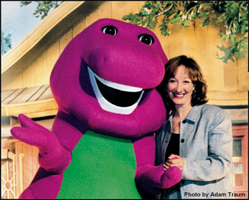

The
Educational Approach Of Barney & Friends™
Educational by Design
The series Barney &
Friends is a unique blending of education and entertainment for
preschool children. By design, the television series addresses the
four key areas of childhood development - cognitive, social, emotional,
and physical.
Each of these areas is
carefully researched by a team of early childhood specialists, with
special attention devoted to the unique learning styles of young children.
"Each Barney episode emphasizes language and cognitive development,
physical activity and social interaction," says Vice-President
of Content Development, Mary Ann Dudko, Ph.D. "Interesting, meaningful
and relevant topics are selected to present educational concepts appropriate
for, and eagerly embraced by, the target group of children ages two
to five," she adds.
"In each episode,
young viewers are invited to use their imaginations in problem-solving
situations. I have found that the best way to help children become
problem-solvers is to develop their creativity and their imaginations;
the two are tied very closely. Young viewers are encouraged to get
up and move around as the cast members sing and dance," Dr. Dudko
adds, "The songs and choreography are presented in a simple,
repetitive style - a key to successful learning for young children."
Researchers at
Yale Commend Barney & Friends
The value of Barney
& Friends' educational influence on children has been well
documented. Yale University's Family Television Research & Consultation
Center produced a series of studies on Barney & Friends,
concluding that the show has a very positive educational impact on
young children. The show particularly influences language development,
one of the early indicators of future success in school, according
to the Yale researchers.
In their first study, Drs.
Jerome and Dorothy Singer of the Yale Center reported that Barney
& Friends was "nearly a model of what a preschool program
should be." Later studies indicated that Barney & Friends'
positive influence extends to children of culturally diverse and low-income
groups. Teachers who took part in the study reported that after viewing
Barney & Friends, occurrences of violent and aggressive
play were reduced among preschool students. In a study by the Singers,
their research illustrates that Barney & Friends helps
children be better prepared to enter a structured learning environment.
According to the study, episodes in this series were especially strong
in dealing with pro-social behaviors and with emotion. "...Barney
& Friends continues to be a television series that adds much
to our nation's goal to 'ready' children for school." (Singer
& Singer, 1999)
Integrating Educational
Concepts into Barney & Friends
Child development experts
guide the production process of Barney & Friends from the
creation of story themes to script development, through pre-production
and production. An educational specialist is on the set during taping
to ensure that the production remains developmentally appropriate
for preschoolers.
The show features the beloved
Barney, his friend Baby Bop, her big brother, BJ, and a culturally
diverse cast of children who have fun learning about positive concepts
such as good health and safety habits, friendship, good manners, self-esteem,
and concern for others.
Barney concludes each episode
of Barney & Friends with a short talk directed to the viewer.
This "Barney Says" format summarizes and reinforces the
episode's events as well as the educational concepts presented.
"Barney & Friends
has been around for 10 years," says Dr. Dudko. "The show
has been consistently educational, consistently genuine and I think
parents know that. I know children know it," she adds.
Getting
The Most Out Of Using The Internet With Your Toddler
• Limit computer
time each day. Let your child choose games to play. Play one game
at a sitting. Young children need opportunities to do many different
activities throughout the day.
• Participate by playing along with your child. Count along
with the dot-to-dot, and name the colors as your child colors the
pictures.
• Model appropriate computer use. Keep area clean from food
and drinks, and demonstrate the correct ways to use the mouse and
keyboard.
• Do follow-up activities to reinforce the theme of the web
site.
Getting
The Most Out Of Watching Television With Your Toddler
• Limit television
viewing time each day. Young children need opportunities to do many
activities throughout the day.
• Watch television with your child. Studies show that television
is most beneficial for children when a parent or another adult watches
with them.
• Participate along with your child. Sing, repeat rhymes, etc.
with your child during the program. Your participation will indicate
to your child that you care and are interested in their interests.
• Talk about what you've watched with your child. Spend time
talking about what happened on the program, both positive and negative
behaviors/actions.
• Do follow-up activities. Repeat some of the pretend play,
activities, and songs after the show is over. This reinforces the
concepts presented.